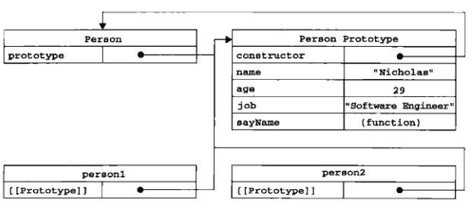
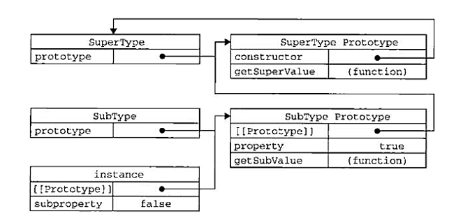
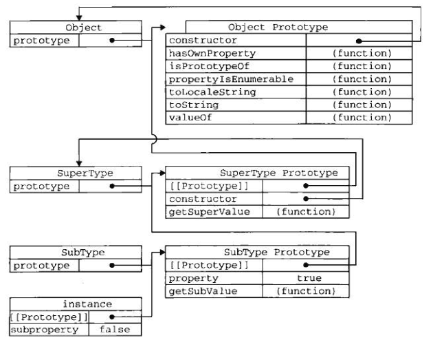

使用对象字面量语法创建一个 Object 的实例：
var person = {
name: "xiaoming",
age: 18,
sayName: function() {
alert(this.name);
}
};
ECMA-262 第5版在定义只有内部才用的特性（attribute）时，描述了属性（property）的各种特征。这些特性是为了实现 JavaScript 引擎用的，因此在 JavaScript 中不能直接访问它们。为了表示特性是内部值，该规范把它们放在了两对儿方括号中，例如 [[Enumerable]]。
ECMAScript 中有两种属性：数据属性和访问器属性。
数据属性包含一个数据值的位置。在这个位置可以读取和写入值。数据属性有4个描述其行为的特性。
要修改属性默认的特性，必须使用 ECMAScript5 的 Object.defineProperty() 方法。这个方法接收三个参数：属性所在的对象、属性的名字和一个描述符对象。其中，描述符（descriptor）对象的属性必须是：configurable、enumerable、writable 和 value。设置其中的一或多个值，可以修改对应的特性值。
var person = {};
console.log(person.name); //undefined
Object.defineProperty(person, "name", {
writable: false,
value: "xiaoming"
});
console.log(person.name); //"xiaoming"
person.name = "xiaohong";
console.log(person.name); //"xiaoming"
一旦把属性 configurable 定义为不可配置的，就不能再把它变回可配置了。此时，再调用 Object.defineProperty() 方法修改除 writable 之外的特性，都会导致错误。
在调用 Object.defineProperty() 方法时创建一个新的属性时，如果不指定，configurable、enumerable 和 writable 特性的默认值都是 false。如果调用 Object.defineProperty() 方法只是修改已定义的属性的特性，则无此限制。
访问器属性不包含数据值；它们包含一对儿 getter 和 setter 函数（不过，这两个函数都不是必需的）。在读取访问器属性时，会调用 getter 函数，这个函数负责返回有效的值；在写入访问器属性时，会调用 setter 函数并传入新值，这个函数负责决定如何处理数据。访问器属性有如下4个特性。
访问器属性不能直接定义，必须使用 Object.defineProperty() 来定义。
var book = {
_year: 2004,
edition: 1
};
Object.defineProperty(book, "year", {
get: function() {
return this._year;
},
set: function(newValue) {
if (newValue > 2004) {
this._year = newValue;
this.edition += newValue - 2004;
}
}
});
book.year = 2005;
alert(book.edition); //2
这里 _year 前面的下划线是一种常用的记号，用于表示只能通过对象方法访问的属性。
不一定非要同时指定 getter 和 setter。只指定 getter 意味着属性是不能写，尝试写入属性会被忽略。只指定 setter 函数的属性也不能读，非严格模式下会返回 undefined。
ECMAScript5 定义了一个 Object.defineProperties() 方法。利用这个方法可以通过描述符一次定义多个属性。这个方法接收两个对象参数：第一个对象是要添加和修改其属性的对象，第二个对象的属性与第一个对象中要添加或修改的属性一一对应。
var book = {};
Object.defineProperties(book, {
year: {
writable: true,
value: 2004
},
edition: {
writable: true,
value: 1
}
});
使用 ECMAScript5 的 Object.getOwnPropertyDescriptor() 方法，可以取得给定属性的描述符。这个方法接收两个参数：属性所在的对象和要读取其描述符的属性名称。返回值是一个对象，如果是访问器属性，这个对象的属性有 configurable、enumerable、get 和 set；如果是数据属性，这个对象的属性有 configurable、enumerable、writable 和 value。
考虑到在 ECMAScript 中无法创建类，开发人员就发明了一种函数，用函数来封装以特定接口创建对象的细节。
function createPerson(name, age) {
var o = new Object();
o.name = name;
o.age = age;
o.sayName = function() {
alert(this.name);
};
return o;
}
var person1 = createPerson("张三", 18);
工厂模式虽然解决了创建多个相似对象的问题，但却没有解决对象识别的问题（即怎样知道一个对象的类型）。
ECMAScript 中的构造函数可用来创建特定类型的对象。像 Object 和 Array 这样的原生构造函数，在运行时会自动出现在执行环境中。此外，也可以创建自定义的构造函数，从而定义自定义对象类型的属性和方法。
function Person(name, age) {
this.name = name;
this.age = age;
this.sayName = function() {
alert(this.name);
};
}
var person1 = new Person("张三", 18);
按照惯例，构造函数始终都应该以一个大写字母开头，而非构造函数则应该以一个小写字母开头。
要创建 Person 的新实例，必须使用 new 操作符。新实例都有一个 constructor （构造函数）属性，该属性指向 Person。
以这种方式定义的构造函数是定义在 Global 对象（在浏览器中是 window 对象）中的。
构造函数与其他函数的唯一区别，就在于调用它们的方式不同。任何函数，只要通过 new 操作符来调用，那它就可以作为构造函数；而任何函数，如果不通过 new 操作符来调用，那它跟普通函数也不会有什么两样。
使用构造函数的主要问题，就是每个方法都要在每个实例上重新创建一遍。然而，创建两个完成同样任务的 Function 实例的确没有必要；况且有 this 对象在，根本不用在执行代码前就把函数绑定到特定对象上面。因此，可以像下面这样，通过把函数定义转移到构造函数外部来解决这个问题。
function Person(name, age) {
this.name = name;
this.age = age;
this.sayName = sayName;
}
function sayName() {
alert(this.name);
}
var person1 = new Person("张三", 18);
可是新问题又来了：在全局作用域中定义的函数实际上只能被某个对象调用，这让全局作用域有点名不副实。如果对象需要定义很多方法，那么就要定义很多个全局函数，于是我们这个自定义的引用类型就丝毫没有封装性可言了。
我们创建的每个函数都有一个 prototype （原型）属性，这个属性是一个指针，指向一个对象，而这个对象的用途是包含可以由特定类型的所有实例共享的属性和方法。
function Person() {
}
Person.prototype.name = "Nicholas";
Person.prototype.age = 29;
Person.prototype.job = "Software Engineer";
Person.prototype.sayName = function() {
alert(this.name);
};
无论什么时候，只要创建了一个新函数，就会根据一组特定的规则为该函数创建一个 prototype 属性，这个属性指向函数的原型对象。在默认情况下，所有原型对象都会自动获得一个 constructor （构造函数）属性，这个属性包含一个指向 prototype 属性所在函数的指针。
当调用构造函数创建一个新实例后，该实例的内部将包含一个指针（内部属性），指向构造函数的原型对象。ECMA-262 第5版中管这个指针叫 [[Prototype]]。这个连接存在于实例与构造函数的原型对象之间，而不是存在于实例与构造函数之间。
虽然在所有实现中都无法访问到 [[Prototype]]，但可以通过 isPrototypeOf() 方法来确定对象之间是否存在这种关系。
alert(Person.prototype.isPrototypeOf(person1)); //true
ECMAScript5 增加了一个新方法，Object.getPrototypeOf()，在所有支持的实现中，这个方法返回 [[Prototype]] 的值。使用 Object.getPrototypeOf() 可以方便地取得一个对象的原型。
alert(Object.getPrototypeOf(person1) == Person.prototype); //true;
alert(Object.getPrototypeOf(person1).name); //"Nicholas"
每当代码读取某个对象的某个属性时，都会执行一次搜索，目标是具有给定名字的属性。搜索首先从对象实例本身开始。如果在实例中找到了具有给定名字的属性，则返回该属性的值；如果没有找到，则继续搜索指针指向的原型对象，在原型对象中查找具有给定名字的属性。如果在原型对象中找到了这个属性，则返回该属性的值。这正是多个对象实倒共享原型所保存的属性和方法的基本原理。
前面提到过，原型最初只包含 constructor 属性，而该属性也是共享的，因此可以通过对象实例访问。
当为对象实例添加一个属性时，这个属性就会屏蔽原型对象中保存的同名属性，但不会修改那个属性。即使将这个属性设置为 null，也只会在实例中设置这个属性，而不会恢复其指向原型的连接。不过，使用 delete 操作符则可以完全删除实例属性，从而让我们能够重新访问原型中的属性。
delete person1.name;
使用 hasOwnProperty() 方法可以检测一个属性是存在于实例中，还是存在于原型中。这个方法（它是从 Object 继承来的）只在给定属性存在于对象实例中时，才会返回 true。
有两种方式使用 in 操作符：单独使用和在 for-in 循环中使用。
在单独使用时，in 操作符会在通过对象能够访问给定属性时返回 true，无论该属性存在于实例中还是原型中。
同时使用 hasOwnProperty() 方法和 in 操作符，就可以确定该属性到底是存在于对象中，还是存在于原型中。
function hasPrototypeProperty(object, name) {
return !object.hasOwnProperty(name) && (name in object);
}
在使用 for-in 循环时，返回的是所有能够通过对象访问的、可枚举的（enumerated）属性，其中既包括存在于实例中的属性，也包括存在于原型中的属性。屏蔽了原型中不可枚举属性（即将 [[Enumerable]] 标记为 false 的属性）的实例属性也会在 for-in 循环中返回，因为根据规定，所有开发人员定义的属性都是可枚举的。
要取得对象上所有可枚举的实例属性，可以使用 ECMAScript5 的 Object.keys() 方法。这个方法接收一个对象作为参数，返回一个包含所有可枚举属性的字符串数组。
如果你想要得到所有实例属性，无论它是否可枚举，可以使用 Object.getOwnPropertyNames() 方法。
alert(Object.getOwnPropertyNames(Person.prototype));
function Person() {
}
Person.prototype = {
name: "Nicholas",
age: 29,
sayName: function() {
alert(this.name);
}
};
这里，用一个包含所有属性和方法的对象字面量来重写原型对象，本质上完全重写了默认的 prototype 对象，因此 constructor 属性也就变成了新对象的 constructor 属性（指向 Object 构造函数），不再指向 Person 函数。
如果 constructor 的值真的很重要，可以像下面这样特意将它设置回适当的值。
Person.prototype = {
constructor: Person,
//...
};
以这种方式重设 constructor 属性会导致它的 [[Enumerable]] 特性被设置为 true。默认情况下，原生的 constructor 属性是不可枚举的，因此如果你使用兼容 ECMAScript5 的 JavaScript 引擎，可以使用 Object.defineProperty()。
Object.defineProperty(Person.prototype, "constructor", {
enumerable: false,
value: Person
});
由于在原型中查找值的过程是一次搜索，因此我们对原型对象所做的任何修改都能够立即从实例上反映出来——即使是先创建了实例后修改原型也照样如此。因为实例与原型之间的连接只不过是一个指针，而非一个副本。
如果是重写整个原型对象，那么情况就不一样了。如果把原型修改为另外一个对象就等于切断了构造函数与最初原型之间的联系。
实例中的指针仅指向原型，而不指向构造函数。
通过原生对象的原型，不仅可以取得所有默认方法的引用，而且也可以定义新方法。可以像修改自定义对象的原型一样修改原生对象的原型，因此可以随时添加方法。
尽管可以这样做，但我们不推荐在产品化的程序中修改原生对象的原型。
首先，它省略了为构造函数传递初始化参数这一环节，结果所有实例在默认情况下都将取得相同的属性值。
原型中所有属性是被很多实例共享的，这种共享对于函数非常合适。然而，对于包含引用类型值的属性来说，问题就比较突出了。
function Person() {
}
Person.prototype = {
friends: ["a", "b"]
};
var p1 = new Person();
var p2 = new Person();
p1.friends.push("c");
alert(p2.friends); //"a,b,c"
创建自定义类型的是常见方式，就是组合使用构造函数模式与原型模式。构造函数模式用于定义实例属性，而原型模式用于定义方法和共享的属性。
function Person(name, age) {
this.name = name;
this.age = age;
}
Person.prototype = {
constructor: Person,
sayName: function() {
alert(this.name);
}
};
这种构造函数与原型混成的模式，是目前在 ECMAScript 中使用最广泛、认同度最高的一种创建自定义类型的方法。可以说，这是用来定义引用类型的一种默认模式。
function Person(name, age) {
this.name = name;
this.age = age;
if (typeof this.sayName != "function") {
Person.prototype.sayName = function() {
alert(this.name);
};
}
}
这里只在 sayName() 方法不存在的情况下，才会将它添加到原型中。这段代码只会在初次调用构造函数时才会执行。
使用动态原型模式时，不能使用对象字面量重写原型，因为那会切断现有实例与新原型之间的联系。
function Person(name, age) {
var o = new Object();
o.name = name;
o.age = age;
o.sayName = function() {
alert(this.name);
};
return o;
}
var person1 = new Person("张三", 18);
除了使用 new 操作符并把使用的包装函数叫做构造函数之外，这个模式跟工厂模式其实是一模一样的。
构造函数返回的对象与构造函数或者与构造函数的原型属性之间没有关系。
我们建议在可以使用其他模式的情况下，不要使用这种模式。
所谓稳妥对象，指的是没有公共属性，而且其方法也不引用 this 的对象。
稳妥对象最适合在一些安全的环境中（这些环境中会禁止使用 this 和 new），或者在防止数据被其他应用程序改动时使用。
稳妥构造函数遵循与寄生构造函数类似的模式，但有两点不同：一是新创建对象的实例方法不引用 this；二是不使用 new 操作符调用构造函数。
function Person(name, age) {
//创建要返回的对象
var o = new Object();
//可以在这里定义私有变量和函数
//添加方法
o.sayName = function() {
alert(name);
};
return o;
}
var person1 = Person("张三", 18);
person1.sayName(); //"张三"
其基本思想是利用原型让一个引用类型继承另一个引用类型的属性和方法。
function SuperType() {
this.property = true;
}
SuperType.prototype.getSuperValue = function() {
return this.property;
};
function SubType() {
this.subproperty = false;
}
SubType.prototype = new SuperType();
SubType.prototype.getSubValue = function() {
return this.subproperty;
};
var instance = new SubType();
alert(instance.getSuperValue()); //true;

以读取模式访问一个实例属性时，首先会在实例中搜索该属性。如果没有找到该属性，则会继续搜索实例的原型。在通过原型链实现继承的情况下，搜索过程就得以沿着原型链继续向上。
所有引用类型默认都继承了 Object，而这个继承也是通过原型链实现的。所有函数的默认原型都是 Object 的实例，因此默认原型都会包含一个内部指针，指向 Object.prototype。

可以通过两种方式来确定原型和实例之间的关系。
第一种方式是使用 instanceof 操作符：
alert(instance instanceof Object); //true
alert(instance instanceof SuperType); //true
alert(instance instanceof SubType); //true
第二种方式是使用 isPrototypeOf() 方法。
alert(Object.prototype.isPrototypeOf(instance)); //true
alert(SuperType.prototype.isPrototypeOf(instance)); //true
alert(SubType.prototype.isPrototypeOf(instance)); //true
子类型有时候需要重写超类型中的某个方法，或者需要添加超类型中不存在的某个方法。但不管怎样，给原型添加方法的代码一定要放在替换原型的语句之后。
在通过原型链实现继承时，不能使用对象字面量创建原型方法。因为这样做就会重写原型链。
使用原型链最主要的问题来自包含引用类型值的原型。包含引用类型值的原型属性会被所有实例共享；而这也正是为什么要在构造函数中，而不是在原型对象中定义属性的原因。在通过原型来实现继承时，原型实际上会变成另一个类型的实例。于是，原先的实例属性也就顺理成章地变成了现在的原型属性了。
function SuperType() {
this.num = [1,2,3,4,5];
}
function SubType() {
}
SubType.prototype = new SuperType();
var ins1 = new SubType();
ins1.num.push(6);
var ins2 = new SubType();
alert(ins2.num); //"1,2,3,4,5,6"
原型链的第二个问题是：在创建子类型的实例时，不能向超类型的构造函数中传递参数。
因此实践中很少会单独使用原型链。
在解决原型中包含引用类型值所带来问题的过程中，可以使用一种叫做借用构造函数的技术（有时候也叫做伪造对象或经典继承）。即在子类型构造函数的内部调用超类型构造函数。别忘了，函数只不过是在特定环境中执行代码的对象，因此通过使用 apply() 和 call() 方法也可以在（将来）新创建的对象上执行构造函数。
function SuperType() {
this.num = [1,2,3,4,5];
}
function SubType() {
SuperType.call(this);
}
var ins1 = new SubType();
ins1.num.push(6);
var ins2 = new SubType();
alert(ins2.num); //"1,2,3,4,5"
function SuperType(name) {
this.name = name;
}
function SubType() {
SuperType.call(this, "张三");
this.age = 18;
}
var instance = new SubType();
alert(instance.name); //"张三"
如果仅仅是借用构造函数，那么也将无法避免构造函数模式存在的问题——方法都在构造函数中定义，因此函数复用就无从谈起了。而且，在超类型的原型中定义的方法，对子类型而言也是不可见的，结果所有类型都只能使用构造函数模式。考虑到这些问题，借用构造函数的技术也很少单独使用的。
组合继承指的是将原型链和借用构造函数的技术组合到一块，从而发挥二者之长的一种继承模式。使用原型链实现对原型属性和方法的继承，而通过借用构造函数来实现对实例属性的继承。
function SuperType(name) {
this.name = name;
this.colors = ["red", "blue", "green"];
}
SuperType.prototype.sayName = function() {
alert(this.name);
};
function SubType(name, age) {
SuperType.call(this, name);
this.age = age;
}
//SubType.prototype = SuperType.prototype;
//如果用上一行替换下面 new SuperType()，那么在 SubType.prototype 中添加或重写新方法，SuperType.prototype 会受到影响
//可以用 SubType.prototype = Object.create(SuperType.prototype); 来替换
SubType.prototype = new SuperType();
SubType.prototype.constructor = SubType;
SubType.prototype.sayAge = function() {
alert(this.age);
};
var instance1 = new SubType("Nicholas", 29);
instance1.colors.push("black");
alert(instance1.colors); //"red,blue,green,black"
instance1.sayName(); //"Nicholas"
instance1.sayAge(); //29
var instance2 = new SubType("Greg", 27);
alert(instance2.colors); //"red,blue,green"
instance2.sayName(); //"Greg"
instance2.sayAge(); //27
借助原型可以基于已有的对象创建新对象，同时还不必因此创建自定义类型。
function object(o) {
function F() {}
F.prototype = o;
return new F();
}
var person = {
name: "Nicholas",
friends: ["Shelby", "Court", "Van"]
};
var anotherPerson = object(person);
anotherPerson.name = "Greg";
anotherPerson.friends.push("Rob");
alert(anotherPerson.friends); //"Shelby,Court,Van,Rob"
ECMAScript5 通过新增 Object.create() 方法规范化了原型式继承。这个方法接收两个参数：一个用作新对象原型的对象和（可选的）一个为新对象定义额外属性的对象。 在传入一个参数的情况下，Object.create() 与 object() 方法的行为相同。
Object.create() 方法的第二个参数与 Object.defineProperties() 方法的第二个参数格式相同：每个属性都是通过自己的描述符定义的。以这种方式指定的任何属件都会覆盖原型对象上的同名属性。
var person = {
name: "Nicholas",
friends: ["Shelby", "Court", "Van"]
};
var anotherPerson = Object.create(person, {
name: {
value: "Greg"
}
});
alert(anotherPerson.name); //"Greg"
在没有必要创建构造函数，而只想让一个对象与另一个对象保持类似的情况下，原型式继承是完全可以胜任的。不过，包含引用类型值的属性始终都会共享相应的值，就像使用原型模式一样。
寄生式继承，创建一个仅用于封装继承过程的函数，该函数在内部以某种方式来增强对象，最后再像真地是它做了所有工作一样返回对象。
function createAnother(original) {
var clone = object(original);
clone.sayHi = function() {
alert("Hi");
};
return clone;
}
var person = {
name: "Nicholas",
friends: ["Shelby", "Court", "Van"]
};
var anotherPerson = createAnother(person);
anotherPerson.sayHi(); //"Hi"
在主要考虑对象而不是自定义类型和构造函数的情况下，寄生式继承也是一种有用的模式。前面示范继承模式时使用的 object() 函数不是必需的；任何能够返回新对象的函数都适用于此模式。
使用寄生式继承来为对象添加函数，会由于不能做到函数复用而降低效率；这一点与构造函数模式类似。
组合继承最大的问题就是无论什么情况下，都会调用两次超类型构造函数：一次是在创建子类型原型的时候，另一次是在子类型构造函数内部。
所谓寄生组合式继承，即通过借用构造函数来继承属性，通过原型链的混成形式来继承方法。其背后的基本思路是：不必为了指定子类型的原型而调用超类型的构造函数，我们所需要的无非就是超类型原型的一个副本而已。本质上，就是使用寄生式继承来继承超类型的原型，然后再将结果指定给子类型的原型。
function inheritPrototype(subType, superType) {
var prototype = object(superType.prototype);
prototype.constructor = subType;
subType.prototype = prototype;
}
开发人员普遍认为寄生组合式继承是引用类型最理想的继承范式。